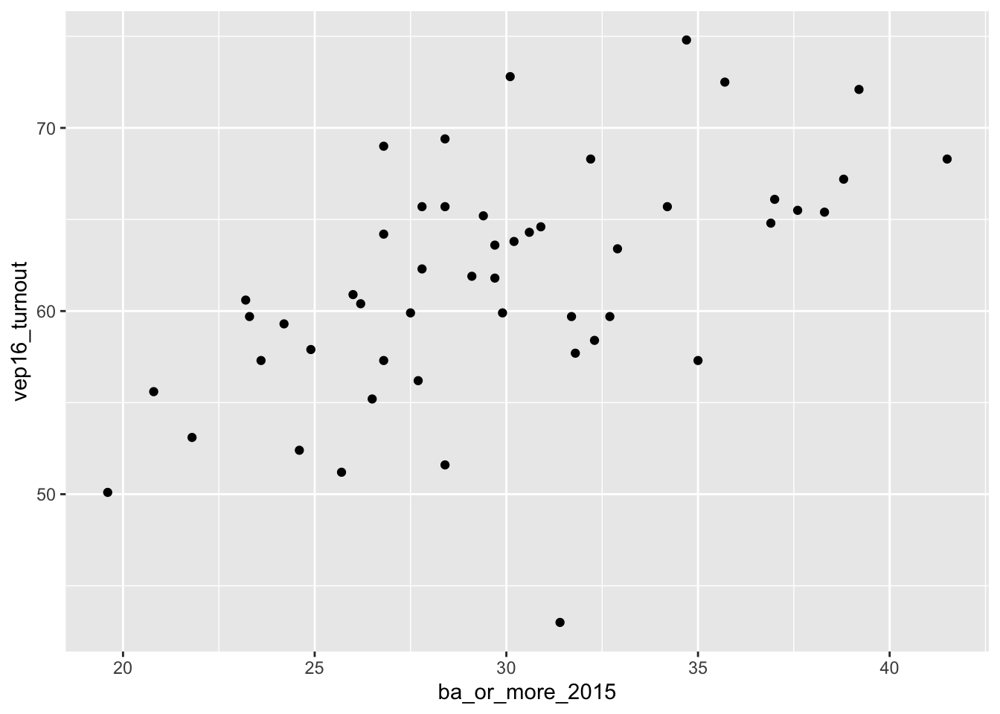
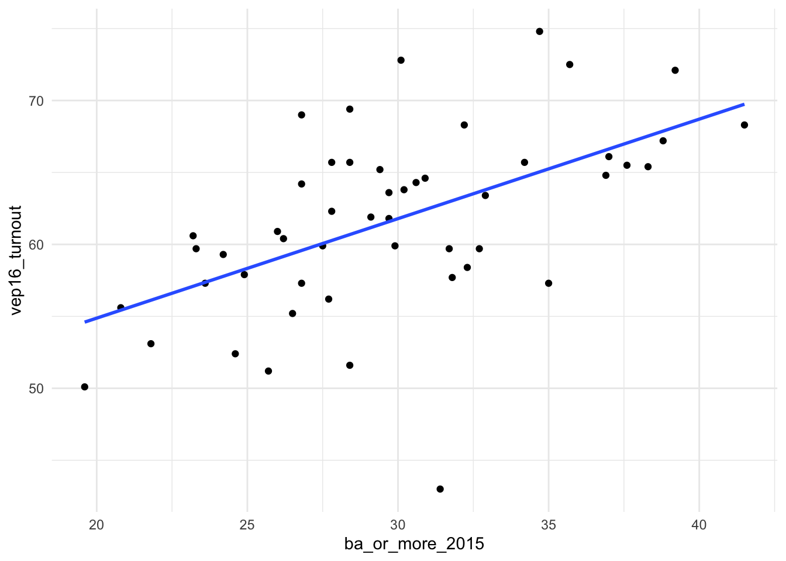

# If you haven't installed these, simply issue a "install.packages()" call. Check "Packages" tab to
# see if they're installed.
#install.packages("skimr")
library(tidyverse)── Attaching packages ─────────────────────────────────────── tidyverse 1.3.2 ──
✔ ggplot2 3.4.0 ✔ purrr 1.0.1
✔ tibble 3.2.0 ✔ dplyr 1.0.10
✔ tidyr 1.2.1 ✔ stringr 1.5.0
✔ readr 2.1.2 ✔ forcats 0.5.2
── Conflicts ────────────────────────────────────────── tidyverse_conflicts() ──
✖ dplyr::filter() masks stats::filter()
✖ dplyr::lag() masks stats::lag()library(moderndive)
library(skimr)
library(gapminder)
library(haven)
# Let's work again with our "states.dta" data from assignment 1
states <- read_dta("states.dta")
# Let's focus on our two variables from Number 1 of Assign. 1:
# ba_or_more_2015: percentage of population in each state with a BA degree or higher
# vep16_turnout: percentage of the population in each state who voted
# If we want to work with a reduced dataset, we can do this:
states_subset <-
states %>%
select(state, ba_or_more_2015, vep16_turnout)
# Explore
#View(states_subset)
# Take random sample of five states
states_subset %>%
sample_n(size = 5)# A tibble: 5 × 3
state ba_or_more_2015 vep16_turnout
<chr> <dbl> <dbl>
1 Kentucky 23.3 59.7
2 Florida 28.4 65.7
3 Nebraska 30.2 63.8
4 Wyoming 26.2 60.4
5 Maryland 38.8 67.2# Generate mean and median of each variable using tidyverse commands
states_subset %>%
summarize(mean_ba = mean(ba_or_more_2015), median_ba = median(ba_or_more_2015),
mean_vep = mean(vep16_turnout), median_vep = median(vep16_turnout))# A tibble: 1 × 4
mean_ba median_ba mean_vep median_vep
<dbl> <dbl> <dbl> <dbl>
1 29.8 29.6 61.7 61.9# Simpler way of doing this: Use skimr package
states_subset %>% select(ba_or_more_2015, vep16_turnout) %>% skim()| Name | Piped data |
| Number of rows | 50 |
| Number of columns | 2 |
| _______________________ | |
| Column type frequency: | |
| numeric | 2 |
| ________________________ | |
| Group variables | None |
Variable type: numeric
| skim_variable | n_missing | complete_rate | mean | sd | p0 | p25 | p50 | p75 | p100 | hist |
|---|---|---|---|---|---|---|---|---|---|---|
| ba_or_more_2015 | 0 | 1 | 29.81 | 5.05 | 19.6 | 26.57 | 29.55 | 32.60 | 41.5 | ▂▆▇▃▂ |
| vep16_turnout | 0 | 1 | 61.66 | 6.38 | 43.0 | 57.75 | 61.85 | 65.65 | 74.8 | ▁▃▇▇▂ |
ggplot(states_subset, aes(y=vep16_turnout)) + geom_boxplot()
# Review: How do we generate a boxplot of this data?
# Correlations
# Recall the scatterplot -- guess the correlation
states_subset %>%
ggplot(aes(x=ba_or_more_2015, y=vep16_turnout)) +
geom_point()
# Two ways to get correlation; first, from moderndive package
states_subset %>%
get_correlation(formula = vep16_turnout ~ ba_or_more_2015)# A tibble: 1 × 1
cor
<dbl>
1 0.548# Second way, from tidyverse command
states_subset %>%
summarize(correlation = cor(vep16_turnout, ba_or_more_2015))# A tibble: 1 × 1
correlation
<dbl>
1 0.548# Regression - recall your line of best fit from Assign. 1
states_subset %>%
ggplot(aes(x=ba_or_more_2015, y=vep16_turnout)) +
geom_point() +
geom_smooth(method="lm", se=FALSE) +
theme_minimal()`geom_smooth()` using formula = 'y ~ x'
# What is this line?
# Fit regression model:
reg1 <- lm(vep16_turnout ~ ba_or_more_2015, data = states_subset)
# Get regression table (from moderndive package)
get_regression_table(reg1)# A tibble: 2 × 7
term estimate std_error statistic p_value lower_ci upper_ci
<chr> <dbl> <dbl> <dbl> <dbl> <dbl> <dbl>
1 intercept 41.0 4.61 8.91 0 31.8 50.3
2 ba_or_more_2015 0.691 0.152 4.54 0 0.385 0.998# Generate predicted/fitted values (y-hat) and residuals, or errors
regression_points <- get_regression_points(reg1)
regression_points# A tibble: 50 × 5
ID vep16_turnout ba_or_more_2015 vep16_turnout_hat residual
<int> <dbl> <dbl> <dbl> <dbl>
1 1 59.3 24.2 57.8 1.52
2 2 61.8 29.7 61.6 0.217
3 3 56.2 27.7 60.2 -4
4 4 53.1 21.8 56.1 -3.02
5 5 58.4 32.3 63.4 -4.98
6 6 72.1 39.2 68.2 3.95
7 7 65.4 38.3 67.5 -2.13
8 8 64.6 30.9 62.4 2.19
9 9 65.7 28.4 60.7 5.02
10 10 59.9 29.9 61.7 -1.82
# … with 40 more rows